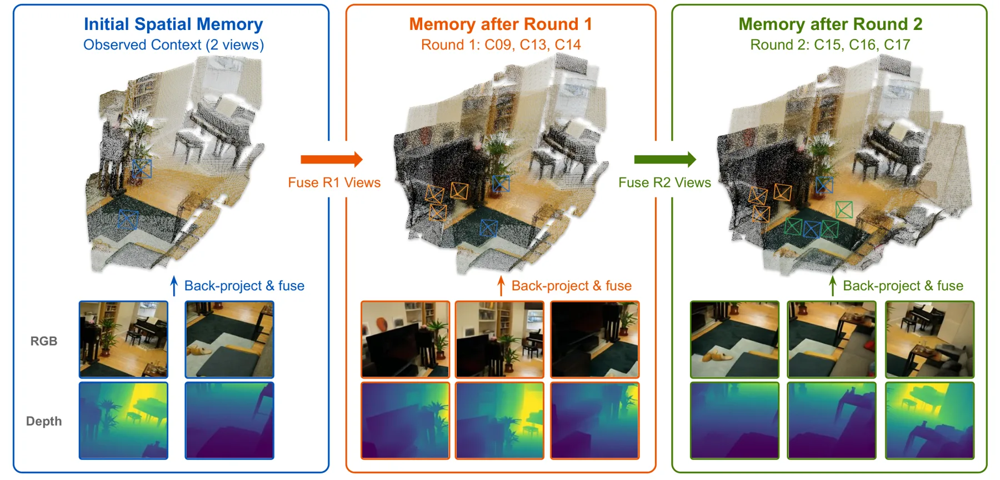
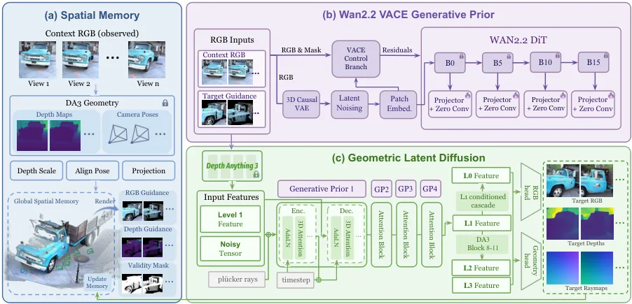
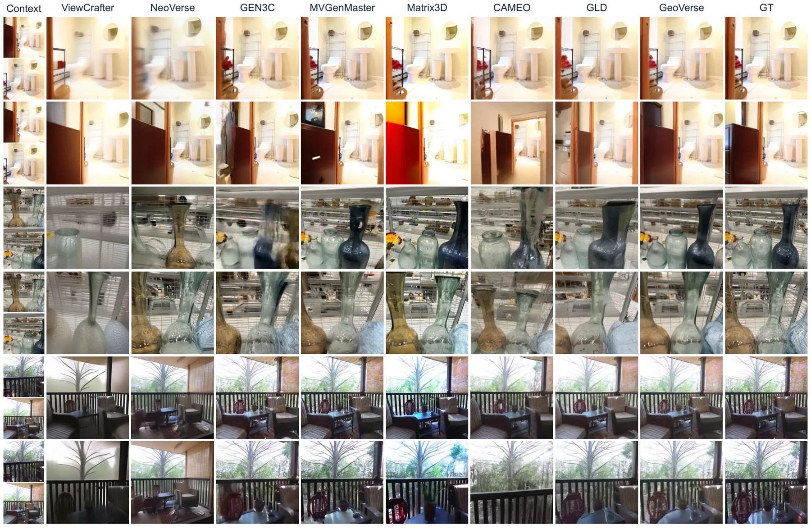
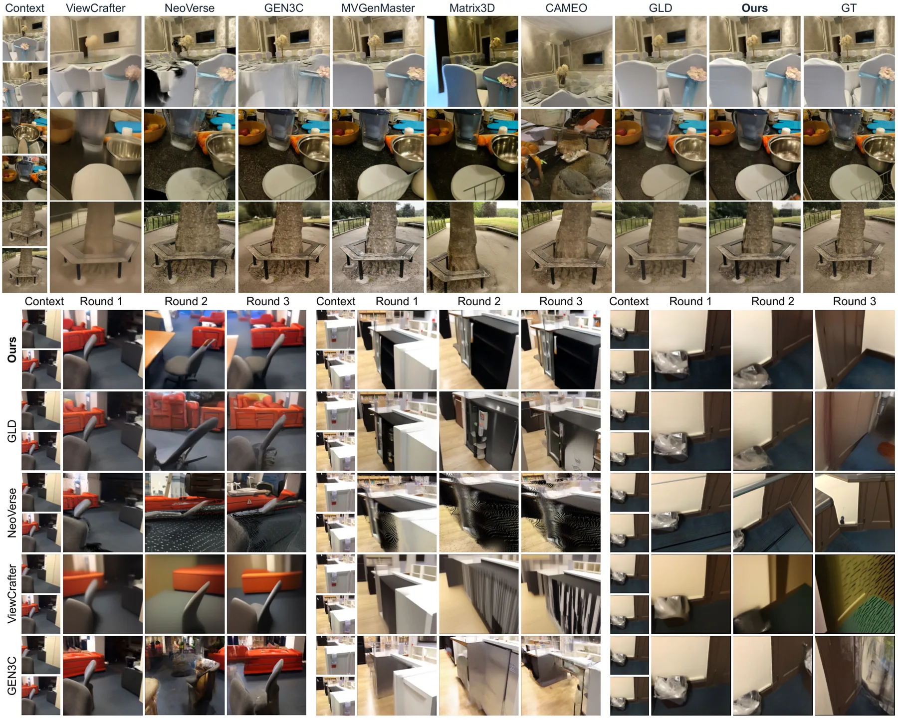
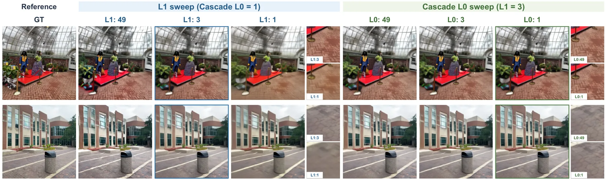
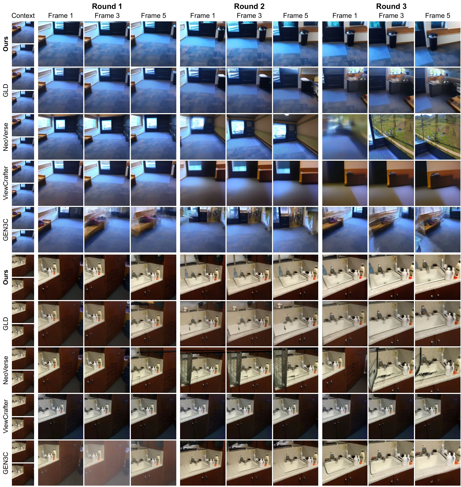

GeoVerse：在 3D 基础模型的几何潜空间里做世界一致的新视角合成
GeoVerse: World-Consistent Novel View Synthesis in Geometric Latent Space
把扩散生成搬到冻结 DA3 的几何潜空间、再用冻结 Wan2.2 VACE 的多层特征做 ControlNet 式外观注入，并用彩色点云记忆锚住多轮一致性；DL3DV PSNR 19.61 dB（GLD 17.38），Mip-NeRF360 ATE 0.071（GLD 0.105），6 个目标视图约 9 s。
PSNR
ATE
作者、单位与技术谱系 · Research context
作者与单位
研究脉络
- GLD: Repurposing Geometric Foundation Models for Multi-view Diffusion (Jang et al., 2026, arXiv:2603.22275)方法基座 / 直接上游关系：GeoVerse 以预训练 GLD 为训练起点，沿用其“在 DA3 几何潜空间做多视图扩散”的公式、层级特征划分（b0–b3 = block 5/7/9/11）与分层采样框架，并把 GLD 作为全表主要对照（DL3DV 17.38 → 19.61 dB）。[arXiv 官方 HTML v1（第 3.1、4.1 节，参考文献 Jang et al. 2026）]
- Depth Anything 3（DA3, Lin et al., 2025）方法基座关系：整条方法的特征空间与几何解码都来自冻结的 DA3 编码器：Level-1（block 7）作为合成边界，几何头直接解码深度与射线图，训练时的深度尺度也用与 DA3 相同的相机中心相似变换估计。[arXiv 官方 HTML v1（第 3.1 节）]
- Wan2.2 VACE (Wan et al., 2025; Jiang et al., 2025b)方法上游（先验来源）关系：作为冻结的视频外观先验，在 block 0/5/10/15 抽取多层级特征，经对齐卷积与 ControlNet 式分支注入几何潜空间；只在推理开始时前向一次。[arXiv 官方 HTML v1（第 3.1 节式 4–6）]
- ViewCrafter (Yu et al., 2024a)方法上游（记忆机制）关系：全局彩色点云记忆、以及“用点云投影成引导再生成”的思路明确借鉴 ViewCrafter 的历史内容累积方式；论文写“Inspired by ViewCrafter, we maintain a global colored point-cloud memory”。[arXiv 官方 HTML v1（引言与第 3.2 节）]
合作网络
- Shanghai Artificial Intelligence Laboratory 作者群Kerui Ren / Tao Lu / Mulin Yu / Chunhua Shen → Shanghai Artificial Intelligence Laboratory关系：共同署名与机构归属[arXiv 官方 HTML v1（作者块）]
- GeoVerse → GLDGeoVerse（本文） → GLD（arXiv:2603.22275，Jang et al.）关系：公开技术依赖（训练起点与主要对照）[arXiv 官方 HTML v1（第 4.1 节）]
- 港中大—港大—上海 AI Lab 交叉署名Linning Xu (The Chinese University of Hong Kong) / Changjian Jiang (The University of Hong Kong) → Bo Dai (The University of Hong Kong)关系：共同署名[arXiv 官方 HTML v1（作者块）]
单位与角色（含通讯作者）均取自 arXiv 官方 HTML 的作者块与脚注；“方法基座/上游”判断基于正文引用与训练设定，属有来源的解读。论文未公开代码时未记录代码依赖。
方法本质拆解 · What actually changed
是不是微调？
不是常规微调，而是以预训练 GLD 为初值的继续训练：先 300k 迭代适配（lr 3×10⁻⁵），再做最多 50k 迭代的分段 reflow 蒸馏（lr 1×10⁻⁵），权重确实改变。但作为条件来源的冻结组件不改：DA3 编码器与 Wan2.2 VACE 全程冻结，新增的可训练部分只有几何潜扩散去噪器、卷积对齐模块与零初始化的 ControlNet 残差分支。
有没有额外约束？
约束体现为条件与损失，而非几何硬约束。输入必须按“上下文图像 + 记忆投影”拼接并乘有效掩码；扩散条件包含相机 Plücker 射线嵌入、Wan2.2 特征、投影深度与掩码，使相机位姿成为显式条件；损失按视图加权（上下文 0.25、目标 1），RGB 在高梯度区域重复施加，深度按相机中心相似变换的尺度对齐后再算 L1；空间记忆每轮用同一相似变换重标定深度。
推理/后端到底做了什么？
推理是 4 步采样：Level-1 三步（reflow 蒸馏后的学生模型，每区间一个 Euler 步）+ 冻结的 Level-0 级联一步；Wan2.2 VACE 特征只在开始时前向抽取一次并在整个去噪过程中复用。每轮生成结束后做记忆维护：反投影像素成带置信度的点集、融合进全局点云、再按下一轮目标相机做深度感知泼溅生成 RGB-D 提示与掩码。没有全局 BA、没有位姿优化后端、没有回环检测，位姿始终由外部给出。
方法本质是什么？
本质是把“生成发生的空间”选在几何基础模型的潜空间，使相机条件与跨视图对应天然成立，再用视频先验补足外观想象、用持久点云记忆锚住跨轮一致性。它改变的是表征与条件，不是状态估计：不估计真实位姿、不恢复绝对米制尺度（记忆靠相似变换自对齐）、不做全局一致性优化，因此它的几何指标只在“给定相机”这一前提下有意义。
输入=上下文 RGB 视图 + 目标相机参数 + 由点云记忆投影出的 RGB-D 提示与有效掩码；改变的位置=生成所在的潜空间（冻结 DA3 的 Level-1 特征）与新增的视频先验残差分支；动作=一次抽取 Wan2.2 VACE 多层特征 + ControlNet 式加法残差注入 + 4 步几何潜空间采样 + 记忆反投影融合与重投影提示；直接效果=四个基准全面超过 GLD（DL3DV +2.23 dB，Mip-NeRF360 ATE −32.4%），6 视图约 9 s。

动机与问题Motivation
动机与问题
论文把 NVS 的难点拆成“重建保真”与“生成补全”的张力：纯重建式前馈方法（MVSplat、AnySplat、WorldMirror 等）受确定性几何形式约束，大视角外推时出现伪影、模糊与空洞；视频扩散模型外观先验虽强，但顺序地生成视图会累积跨帧不一致，长时程出现漂移与结构崩坏；已有的混合方案把视频特征与 3D 表示对齐，却要付出合成密集视频帧的算力代价。GLD 用 DA3 的几何特征空间作为多视图扩散的原生潜空间，跨视图对应与相机控制都强，但受训练分布限制，野外场景的生成保真与稳定性不足。GeoVerse 因此选了两条补充路径：注入高容量视频生成先验，以及用持久空间记忆把多轮生成锚在同一坐标系。
方法Method
方法总览
整条管线分三块。其一，几何潜空间生成：输入序列由上下文图像与空间记忆投影拼接而成，经冻结的 DA3 编码器编码到合成边界（Level-1 对应第 7 个 Transformer block），Level-1 特征上用 flow matching 生成，再由级联采样器恢复 Level-0 特征，最后经 RGB 头与几何头解码目标外观与深度/射线图。其二，视频先验注入：冻结的 Wan2.2 VACE 只前向一次，在第 0/5/10/15 个 block 抽取多层特征，经卷积模块对齐到注入层的分辨率与通道后，由一个 ControlNet 式分支在与主去噪器相同的扩散时间步与相机条件下产生加法残差（投影零初始化，保证起点等价于原预训练模型）。其三，持久空间记忆：上下文观测初始化彩色点云记忆，之后每轮把生成结果按相机中心相似变换对齐尺度、反投影成带颜色与置信度的点集，融合进记忆，再按目标相机做深度感知泼溅，得到目标对齐的 RGB-D 提示与有效掩码，作为下一轮的输入条件。
关键技术细节
条件项写得很明确：去噪器除了噪声状态 X_t 与时间步 t，还接收几何编码特征 F̄、相机 Plücker 射线嵌入 Γ、Wan2.2 特征 F^W、投影深度 D^proj 与有效掩码 V。损失权重按视图区分：上下文视图 α=0.25、目标视图 α=1，优先保证新视角合成质量；解码侧除 latent 的 flow-matching 目标，还监督 RGB（对有效像素的 L1，并在高梯度区域重复施加）与深度（用相机中心相似变换估出的尺度 s* 把预测深度对齐到参考深度后的 L1）。深度估计与尺度对齐沿用 DA3 的做法，记忆更新时也用同一相似变换重标定每轮深度，以抑制多轮之间的尺度漂移。少步推理用分段 reflow 蒸馏：把 Level-1 的轨迹切成三段，学生模型学习每个区间两端点之间的直线位移，并与原始 flow-matching 目标加权混合以稳定训练；最终预算为 3 步 Level-1 + 1 步冻结的 Level-0 级联。

实验Experiments
实验设置
数据集与协议：域内基准 RealEstate10K 与 DL3DV，域外基准 Mip-NeRF360 与 ScanNetV2（后者只做长序列评测，三轮连续生成）；每轮使用 2 个上下文视图与 6 个目标视图。指标分三组：视觉质量 PSNR/SSIM/LPIPS；目标相机保真度用 VGGT 估计位姿后的 ATE 与相对位姿误差 RPE_r/RPE_t，以及重投影误差与 MEt3R（跨视图几何/特征一致性）；以及平均推理时间。对照方法为 ViewCrafter、NeoVerse、GEN3C、MVGenMaster、Matrix3D、CAMEO 与 GLD。训练从预训练的 GLD 出发，在 15 个真实与合成多视图数据集上训练，使用 DA3-Base、分辨率 504×504、每个样本 8 个有序视图（其中 1–4 个作为上下文），先做 300k 迭代适配（lr 3×10⁻⁵），再做最多 50k 迭代 reflow 蒸馏（lr 1×10⁻⁵），32×A800、AdamW、global batch 32。
实验数字与比较
① DL3DV（表 1）：GeoVerse PSNR 19.61、SSIM 0.598、LPIPS 0.339、ATE 0.028、耗时 9.24 s；GLD 为 17.38/0.546/0.383/0.058/169.29 s；MVGenMaster 17.28 dB、GEN3C 17.06 dB。② Mip-NeRF360：PSNR 20.02 vs GLD 17.57（+2.45 dB）、ATE 0.071 vs 0.105（相对下降 32.4%）、耗时 9.12 s vs 156.01 s。③ RealEstate10K：PSNR 21.29 vs GLD 19.66、ATE 0.035 vs 0.037。④ ScanNetV2 长序列三轮：PSNR 19.65 vs GLD 15.33、ATE 0.009 vs 0.011、耗时 33.11 s vs 476.27 s。⑤ 步数预算（表 2，DL3DV）：Level-1 从 3 步降到 1 步，时间 9.24→6.07 s，但 LPIPS 从 0.339 退化到 0.367（细节丢失）；Level-0 从 49 步降到 1 步，LPIPS 0.342 vs 0.339 基本持平而时间大幅下降，支撑 3+1 的预算分配。
消融/失败边界
消融在 ScanNetV2 上做（表 3）：完整模型 PSNR 19.65/ATE 0.009；去掉 Wan2.2 视频先验退化最严重，PSNR 16.83、ATE 0.022（−2.82 dB），说明外观先验是补全能力的主要来源；去掉空间记忆 PSNR 17.87、ATE 0.014（跨视图对齐变差）；把残差注入换成 MoT 式的 video-KV 注意力 19.24/0.009；去掉 RGB 监督 18.58/0.014；去掉深度监督 19.05/0.010。失败边界有两类：一是纹理稀少或几何复杂区域，初始深度误差与生成外观漂移会沿空间记忆累积，长轨迹下跨视图对齐偶尔变差；二是峰値视觉保真受 DA3 特征空间的外观容量限制，紧凑特征条件化难以匹配全尺寸视频扩散模型的细纹理丰富度。此外，几何指标的自评依赖 VGGT 位姿估计，如果位姿估计本身有系统偏差，ATE 的比较会被一起带走。
局限与迁移Limitations & Transfer
局限与待核验
作者在 Limitations 中明确承认两点：一是峰值视觉保真受 DA3 特征空间外观容量限制，追求速度的紧凑条件化使其难以企及全尺寸视频扩散模型的细纹理；二是多轮一致性同时依赖几何骨干与合成 RGB 的相干性，在无纹理或复杂区域误差会沿记忆累积。待核验项：所有 3D 指标都来自 VGGT 估计位姿，论文未用独立位姿源（如 SLAM 或测量级真值）复核，ATE 的绝对可比性需要重算；正文写“约 18× 加速”，结论写“over 17 times”，与表 1 按数据集算出的 17.1–18.3× 区间基本一致，但表述不统一，引用时需注明按数据集；15 个训练数据集的完整清单与数据配比未在正文说明；论文未报告生成失败案例的比例统计；空间记忆的点数/置信度阈值等超参未在正文给出（需查附录）。
与你研究路线的关系
① 最值得借用的是“接口位置”这一设计：把生成/约束放在几何基础模型的潜空间而不是图像空间，等价于回答“学习几何先验应该作用于哪一层表示”，这个问题在我们的状态估计里同样存在（先验作用于观测、因子还是状态）。② 空间记忆的“反投影—融合—按目标视角泼溅成 RGB-D 提示 + 有效掩码”是一个可直接复用的模块：它本质上把历史信息转成“像素对齐的引导 + 可信区域标注”，我们的做法可以改成把 GNSS/INS 或 PPP 先验投影到图像平面并附上置信掩码，作为学习式前端或匹配的额外条件。③ 每轮用相机中心相似变换重标定尺度，是多轮尺度漂移的工程解法，可平移到我们的多源尺度对齐流程。④ 下一步最小实验：在同一段轨迹上比较“无条件深度”与“记忆投影 + 有效掩码条件化深度”的地图误差与位姿 ATE，先量化条件化增益，再决定是否引入持久记忆模块。需要停留的地方：GeoVerse 不估计绝对尺度、不做全局位姿优化，它的输出几何只有在给定相机条件下才有意义。







